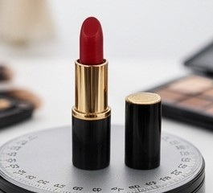
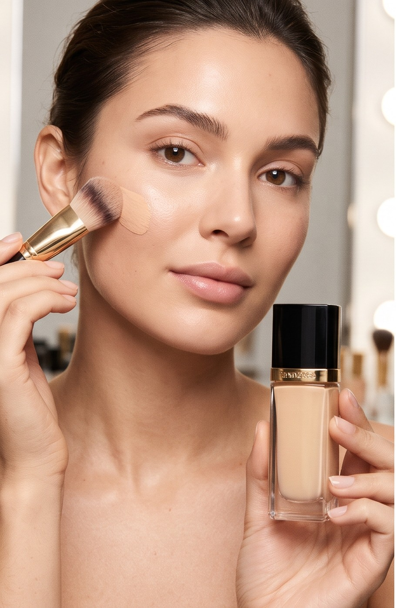
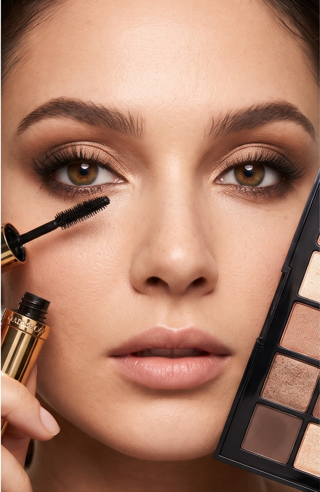
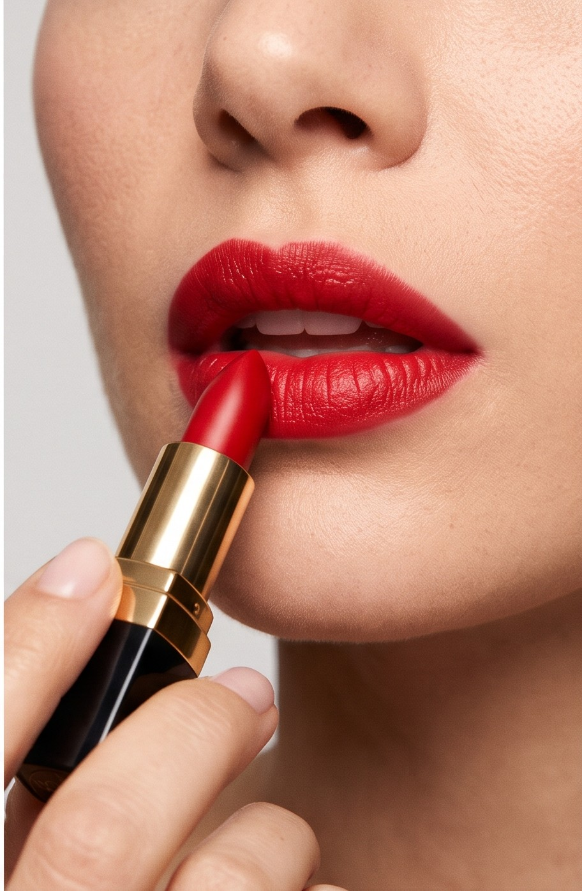

BELEZA · COR · EXPRESSÃO
A BELEZASE MOVECOM VOCÊ
Um convite para experimentar, criar e escolher o seu próprio jeito de brilhar.
Role para descobrirCRYSTAL MAKE · EM MOVIMENTO
QUADRO 01 / 36
A CADA MOVIMENTO, UM NOVO ÂNGULO
Um novo tom
em movimento.
Role a página para percorrer os 36 quadros da rotação do batom.

BELEZA DO SEU JEITO
ESCOLHA
SUA PRÓXIMA
FACETA.
Uma cor que muda o dia. Um detalhe que revela uma nova versão. Explore as possibilidades e encontre o que conversa com você.
Ver novidades no Instagram
01 / ROSTORealcenatural.↗

02 / OLHOSOlharmarcante.↗

03 / LÁBIOSUm toquede cor.↗
SEU PRÓXIMO BRILHO COMEÇA AQUI